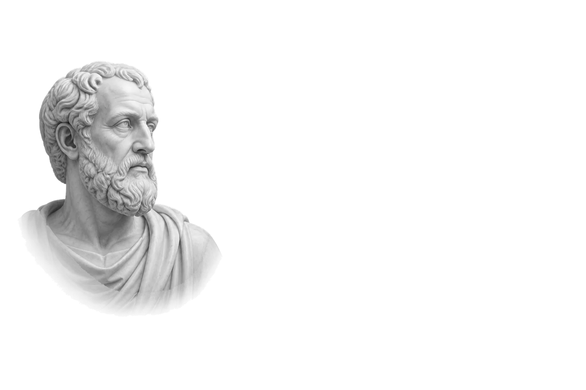

voiceflow
Press a hotkey. Speak.
Text appears in any window.
Local Whisper on your GPU·No cloud·MIT
Linux (Wayland)·Windows·macOS

Press a hotkey. Speak.
Text appears in any window.
Local Whisper on your GPU·No cloud·MIT
Linux (Wayland)·Windows·macOS